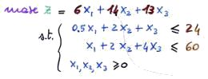
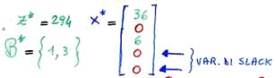

Torna alla pagina di Ricerca Operativa
:: Ricerca Operativa - Prezzi ombra ::
Tutte le immagini di questa pagina sono prese dalle slide del prof Giovanni Righini
Consideriamo come caso di studio il seguente problema PL di massimizzazione in forma alle disuguaglianze:

Diamogli la seguente interpretazione economica:
- x1, x2, x3: sono la quantità da produrre
- 6, 14, 13: sono i ricavi per unità di prodotto
- 24, 60: è la quantità di risorse disponibile
All'ottimo avremo:

Dato poi che i coefficienti di costo ridotto sono: rT = [0 -9 0 -11 -0.5]]
allora: z* = 294 - 9x2 - 11x4 - 0.5x5
Se invece di avere 24 unità di risorse disponibili ne avessimo 23, allora la funzione obiettivo peggiorerà di 11. Come lo so? Seguite il ragionamento:
- la variabile di slack del primo vincolo è x4, che non essendo in base (vincolo attivo) varrà 0
- ma se il termine noto del vincolo diminuisce di uno, allora x4 deve valere necessariamente -1, entrando così in base
- sappiamo però che i coefficienti di costo ridotto ci danno un'indicazione di quanto varierebbe la soluzione se la variabile corrispondente entrasse in base, e guardacaso C4 = -11
Ecco che abbiamo dimostrato l'affermazione iniziale.
I coefficienti di costo ridotto delle variabili di slack possono quindi essere interpretati come i prezzi delle risorse, perché mi dicono di quanto migliorerei o peggiorerei in termini di funzione obiettivo se avessi un'unità di risorsa in più o in meno. In soldoni stiamo parlando del "prezzo che sono disposto a pagare per ottenere un'unità di risorsa in più", o specularmente del "prezzo a cui sono disposto a venderne un'unità". Nel nostro caso sappiamo che un'unità della risorsa sul primo vincolo vale 11, quindi se qualcuno me la vende a meno ho convenienza a comprarla, e allo stesso tempo mi conviene venderla a più di 11.
Questi prezzi sono i prezzi ombra delle risorse, e abbiamo visto che ne indicano il valore.
Facciamo un altro ragionamento, considerando stavolta i costi ridotti delle variabili originali. Prendiamo ad esempio x2: il fatto che valga 0 oltre a farci capire che è una variabile fuori base ci indica anche che non stiamo producendo nessuna unità di prodotto 2. Qualora l'azienda decidesse di produrne un'unità di prodotto, vendendola avrebbe un ricavo marginale di 14 (il coefficiente di x2 nella funzione obiettivo). Tuttavia per produrla consumerebbe due unità della prima risorsa (primo vincolo) e due della seconda (secondo vincolo), con un costo di: 2 * 11 + 2 * 0.5 = 23 (dove 11 e 0.5 sono i coefficienti di costo ridotto di x4 e x5). In totale quindi guadagno: 14 - 23 = -9. Ci sto perdendo!
Ma era davvero necessario fare tutti questi calcoli? Ovviamente no: bastava guardare il coefficiente di costo ridotto della variabile x2, che è proprio pari a -9.
In generale il costo ridotto rj si calcola come:
Ecco svelato il motivo per cui si chiamano "costi ridotti": sono il costo meno qualcosa.
Concludiamo con qualche osservazione:
- le risorse non scarse sono le variabili di slack delle risorse che mi avanzano, ed ovviamente il loro prezzo ombra è nullo. Questa proprietà è più intuitiva di quello che sembra, dato che non sarei mai disposto a pagare per qualcosa che ho già in eccedenza
- il fatto che i costi ridotti corrispondenti alle variabili in base siano nulli ci fa capire che i costi marginali risultano uguali ai ricavi marginali. Basta calcolarli per verificare
- i prezzi ombra dei vincoli di minore uguale (se sto massimizzando) sono opposti in segno ai coefficienti di costo ridotto delle corrispondenti variabili di slack; mentre quelli dei vincoli di >= sono uguali ai coefficienti di costo ridotto delle corrispondenti variabili di surplus
Torna alla pagina di Ricerca Operativa